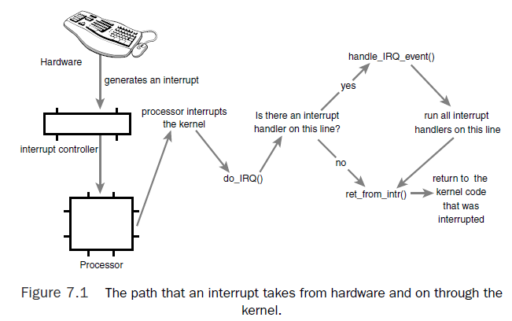
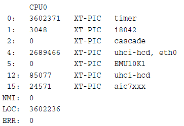
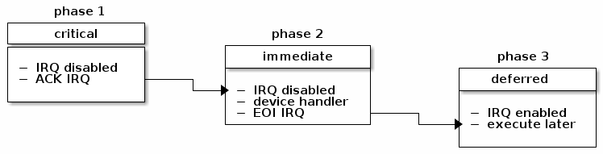
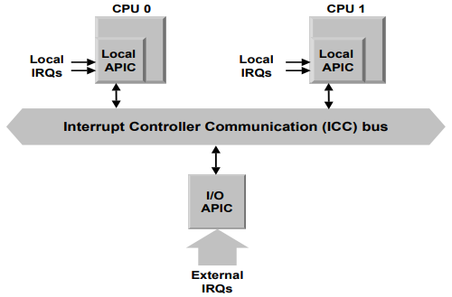
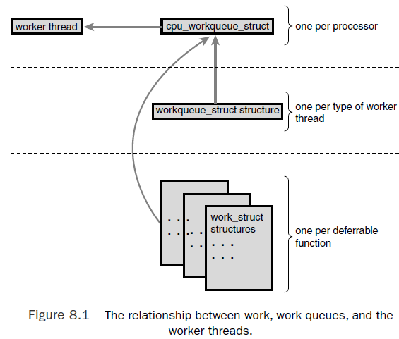

An interrupt enable hardware to signal to the processor.

the kernel infrastructure for handling the two is similar.
int 0x80): issue a software interrupt which traps into the kernel and causes execution of exception handler.Interrupts can be divided to maskable interrupts and non-maskable interrupts.
There are two sources for exceptions:
INT n : The INT n instruction permits interrupts to be generated by software.The 80×86 microprocessors issue roughly 20 different exceptions.* The kernel must provide a dedicated exception handler for each exception type.
Procfs is a virtual filesystem that exists only in kernel memory and is typically mounted at /proc. An example is the /proc/interrupts file, which is populated with statistics related to interrupts on the system.
Example output

name argument in request_irq() call.procfs code is located primarily in fs/proc.The function that provides /proc/interrupts is architecture-dependent and named show_interrupts(), eg, in <arch/x86/kernel/irq.c>.
The function the kernel runs in response to a specific interrupt is called an interrupt handler or interrupt service routine (ISR).
Interrupt handlers in Linux need not be reentrant. When a given interrupt handler is executing, the corresponding interrupt line is masked out on all processors, preventing another interrupt on the same line from being received.
Also refer to interrupt-context
The processing of interrupts is split into two parts, or halves.
Eg. a network card recevies packets from the network, it immediately issues an interrupt, The interrupt runs, acknowledges the hardware, copies the new networking packets into main memory, and readies the network card for more packets. These jobs are done as top halves (including copying data into main memory because network card memory is limited). After the networking data is safely in the main memory, the interrupt’s job is done, and it can return control of the system to whatever code was interrupted when the interrupt was generated.The rest of the processing and handling of the packets occurs later, in the bottom half.

set of statically defined bottom halves
softirq can run simultaneously on any processor; even two of the same type can run concurrently.
softirq code in the kernel/softirq.c.
Implementation details refer to Softirq Kernel Internals
tasklets are flexible, dynamically created bottom halves built on top of softirqs.
Same as with softirqs:
Unlike softirqs, however, two of the same tasklets never run concurrently
Implementation details refer to tasklet Kernel Internals
Work queues are a method of queuing work to later be performed in process context.
Compared to softirq/taskset, most importantly, work queues are schedulable and can therefore sleep.
If you need a schedulable entity to perform your bottom-half processing, you need work queues. They are the only bottom-half mechanisms that run in process context, and thus, the only ones that can sleep.This means they are useful for situations in which you need to allocate a lot of memory, obtain a semaphore, or perform block I/O.
Implementation details refer to work queue Kernel Internals
The kernel timer tick is an interrupt triggered at a periodic interval (based on the kernel compile option CONFIG_HZ) on one core, it interrupts only a particular CPU instead of raising an interrupt that can be handled by any CPU.
When the tick fires (as often as every millisecond, based on value of CONFIG_NO_HZ), it will get scheduled ahead of whatever’s currently running on a CPU core.
The tick is used to:
gettimeofday and system uptime.poll() and select() timeout)Kernel Details of Timer Interrupt Handler - "Linux Kernel Development Chapter 11 Section The Timer Interrupt Handler"
The frequency of the system timer is defined as HZ. The kernel defines the value in <asm/param.h>, by default the x86 architecture defines HZ to be 100. The value can be configured at kernel compile time.
If that option is set, the timer tick will be turned off (with cavet), but only when the CPU is idle.
In Kernel 3.10, the CONFIG_NO_HZ option has been replaced by a three-way choice:
CONFIG_HZ_PERIODIC is the old-style mode wherein the timer tick runs at all times.CONFIG_NO_HZ_IDLE (the default setting) will cause the tick to be disabled at idle, the way setting CONFIG_NO_HZ did in earlier kernels.CONFIG_NO_HZ_FULL will enable the "full" tickless mode.
Reference: https://www.kernel.org/doc/Documentation/timers/NO_HZ.txt
$ watch -n1 -d "cat /proc/interrupts|egrep 'LOC|CPU'"
$ perf stat -C 1 -e irq_vectors:local_timer_entry sleep 1
Interprocessor interrupts (IPIs) are used to exchange messages between CPUs in SMP system.
In SMP systems we may have multiple interrupt controllers in the systems. On the x86 architecture each core has a local APIC used to process interrupts from locally connected devices like timers or thermals sensors. Then there is an I/O APIC is used to distribute IRQ from external devices to CPU cores.
Important feature of the APIC is that it allows CPUs to generate interprocessor interrupts (IPI). CPU can store the interrupt vector and the identifier of the target’s local APIC in the Interrupt Command Register (ICR) of its own local APIC. A message is then sent via the ICC bus to the target’s local APIC, which then issues a corresponding interrupt to its own CPU.

SMP kernel recognizes four different type of messages identified by interrupt vectors:
smp_reschedule_interrupt().# watch -n1 -d "cat /proc/interrupts|egrep 'RES|CPU"smp_invalidate_interrupt().smp_apic_timer_interrupt(), which handles pending softirqs also.flush_tlb_all_ipi() and stop_this_cpu().smp_call_function_interrupt()./proc/interrupts.# watch -n1 -d "cat /proc/interrupts|egrep ‘CAL|CPU'"An interrupt is said to be masked when it has been disabled, or when the CPU has been instructed to ignore it. A non-maskable interrupt (NMI) cannot be ignored, and is generally used only for critical hardware errors.
NMIs are normally delivered over a separate interrupt line (NMI pin). When an NMI is received by the CPU, it indicates that a critical error has occurred and that the system is probably about to crash. The NMI is generally the best indication of what might have caused the problem.
Because NMIs are not able to be ignored, they are also used by some systems as a hardware monitor. The device sends a stream of NMIs, which are checked by an NMI handler in the processor. If certain conditions are met - such as an interrupt not being triggered after a specified length of time - the NMI handler can produce a warning and debugging information about the problem. This helps to identify and prevent system lockups.
System Management Interrupts (SMIs) are a special type of non-maskable interrupt (NMI) that places the CPU in system management mode.
SMIs are configured and serviced by the BIOS and are typically used to handle critical thermal or power management events. They are sometimes also used to implement BIOS-level emulation of legacy devices, like floppy disk drives.
C Code is in arch/x86/kernel/irq.c.
arch/x86/kernel/entry_64.S) simply saves this IRQ number and stores the current register values on the interruption stack. then the kernel calls do_IRQ().do_IRQ() acknowledges the receipt of the interrupt and disables interrupt delivery on the line. Next, do_IRQ() ensures that a valid handler is registered on the line and that it is enabled and not currently executing. If so, it calls handle_IRQ_event(), defined in kernel/irq/handler.c, to run the installed interrpt handler on the line.handle_IRQ_event() is done, Back in do_IRQ(), the function cleans up and returns
to the initial entry point, which then jumps to ret_from_intr().ret_from_intr(), written in assembly, checks whether a reschedule is pending.
schedule() is called.schedule() is called only if the preempt_count() is zero.schedule() returns, or if there is no work pending, the initial registers are restored and the kernel resumes whatever was interrupted.Interrupt handlers are the responsibility of the driver managing the hardware. The driver should register the interrupt handler.
Drivers can register an interrupt handler and enable a given interrupt line for handling
with the function request_irq(), which is declared in <linux/interrupt.h>:
/* request_irq: allocate a given interrupt line */
int request_irq(unsigned int irq,
irq_handler_t handler, /*a function pointer to the actual interrupt handler*/
unsigned long flags,
const char *name,
void *dev)
The meaning of the arguments of above functions is explained in "Linux Kernel Development Chapter 7"
Above registered handler function is invoked whenever the operating system receives the interrupt.
typedef irqreturn_t (*irq_handler_t)(int, void *);
Note that request_irq() can sleep and therefore cannot be called from interrupt context or other situations where code cannot block.
/proc/irq. The function proc_mkdir() creates new procfs entries. It in turn
calls proc_create() to set up the new procfs entries, which in turn calls kmalloc() to allocate memory, and kmalloc() can sleep.An example from the real-time clock (RTC) driver, found in <drivers/char/rtc.c>.
An RTC is a device that sets the system clock, provides an alarm, or supplies a periodic timer. The timer functionality is normally implemented via interrupt.
When the RTC driver loads, the function rtc_init() is invoked to initialize the driver. One of its duties is to register the interrupt handler:
/* register rtc_interrupt on rtc_irq */
if (request_irq(rtc_irq, rtc_interrupt, IRQF_SHARED, "rtc", (void *)&rtc_port)) {
printk(KERN_ERR "rtc: cannot register IRQ %d\n", rtc_irq);
return -EIO;
}
The handler itself. This function is invoked whenever the machine receives the RTC interrupt. The spin lock ensures the data is not accessed concurrently by another processor on an SMP machine.
static irqreturn_t rtc_interrupt(int irq, void *dev)
{
/*
* Can be an alarm interrupt, update complete interrupt,
* or a periodic interrupt. We store the status in the
* low byte and the number of interrupts received since
* the last read in the remainder of rtc_irq_data.
*/
spin_lock(&rtc_lock);
rtc_irq_data += 0x100;
rtc_irq_data &= ~0xff;
rtc_irq_data |= (CMOS_READ(RTC_INTR_FLAGS) & 0xF0);
if (rtc_status & RTC_TIMER_ON)
mod_timer(&rtc_irq_timer, jiffies + HZ/rtc_freq + 2*HZ/100);
spin_unlock(&rtc_lock);
/*
* Now do the rest of the actions
*/
spin_lock(&rtc_task_lock);
if (rtc_callback)
rtc_callback->func(rtc_callback->private_data);
spin_unlock(&rtc_task_lock);
wake_up_interruptible(&rtc_wait);
kill_fasync(&rtc_async_queue, SIGIO, POLL_IN);
return IRQ_HANDLED;
}
Softirqs are statically allocated at compile time. Softirqs are represented by the softirq_action structure,
defined in <linux/interrupt.h>
struct softirq_action {
void (*action)(struct softirq_action *);
};
A 32-entry array of this structure is declared in <kernel/softirq.c>. The kernel enforces a limit of 32
registered softirqs; in the current kernel, however, only nine exist.
| Tasklet | Priority | Softirq Description |
|---|---|---|
| HI_SOFTIRQ | 0 | High-priority tasklets |
| TIMER_SOFTIRQ | 1 | Timers |
| NET_TX_SOFTIRQ | 2 | Send network packets |
| NET_RX_SOFTIRQ | 3 | Receive network packets |
| BLOCK_SOFTIRQ | 4 | Block devices |
| TASKLET_SOFTIRQ | 5 | Normal priority tasklets |
| SCHED_SOFTIRQ | 6 | Scheduler |
| HRTIMER_SOFTIRQ | 7 | High-resolution timers |
| RCU_SOFTIRQ | 8 | RCU locking |
static struct softirq_action softirq_vec[NR_SOFTIRQS];
The prototype of a softirq handler, action, looks like
void softirq_handler(struct softirq_action *)
the kernel would invoke the softirq handler function as
my_softirq->action(my_softirq);
register softirq handler
the softirq handler is registered at run-time via open_softirq(), which takes two
parameters: the softirq’s index and its handler function.The networking subsystem, for
example, registers its softirqs like this, in net/core/dev.c:
open_softirq(NET_TX_SOFTIRQ, net_tx_action);
open_softirq(NET_RX_SOFTIRQ, net_rx_action);
raise softirq
After a handler is added to the enum list and registered via open_softirq(), it is ready to
run. To mark it pending, so it is run at the next invocation of do_softirq(), use
raise_softirq() call. For example, the networking subsystem would call,
raise_softirq(NET_TX_SOFTIRQ);
Softirqs are most often raised from within interrupt handlers. The interrupt handler performs the basic hardware-related work, raises the softirq, and then exits.
softirq execution
Usually, an interrupt handler marks its softirq for execution before returning. Then, at a suitable time, the softirq runs. Pending softirqs are checked for and executed in the following places:
softirq execution occurs in __do_softirq(), which is invoked by do_softirq(), both defined in <kernel/softirq.c>, the gut of __do_softirq() is listed below:
u32 pending;
// a 32-bit mask of pending softirqs, if n-th bit is set, nth softirq is pending
pending = local_softirq_pending();
if (pending) {
struct softirq_action *h;
/* reset the pending bitmask */
set_softirq_pending(0);
h = softirq_vec;
do {
if (pending & 1)
h->action(h);
h++;
pending >>= 1;
} while (pending);
}
tasklets are implemented on top of softirqs, they are represetned by two softirqs: HI_SOFTIRQ and TASKLET_SOFTIRQ.The only difference is that the HI_SOFTIRQ based tasklets run prior to the TASKLET_SOFTIRQ tasklets.
Tasklets are represented by the tasklet_struct structure, declared in <linux/interrupt.h>:
struct tasklet_struct {
struct tasklet_struct *next; /* next tasklet in the list */
unsigned long state; /* state of the tasklet */
// If it is nonzero, the tasklet is disabled and cannot run;
// if it is zero, the tasklet is enabled and can run if marked pending.
atomic_t count; /* reference counter */
// The func member is the tasklet handler (the equivalent of action to a softirq)
// and receives data as its sole argument.
void (*func)(unsigned long); /* tasklet handler function */
unsigned long data; /* argument to the tasklet function */
};
Create tasklet
You can create tasklets statically or dynamically, defined in <linux/interrupt.h>:
// use one of two macros to create statically
DECLARE_TASKLET(name, func, data) // sets reference count to zero, and the tasklet is enabled
DECLARE_TASKLET_DISABLED(name, func, data); // sets count to 1, the tasklet is disabled
tasklet_init(t, tasklet_handler, dev); /* dynamically as opposed to statically */
tasklet handler
The tasklet handler must match the correct prototype:
void tasklet_handler(unsigned long data)
Schedule tasklet
Scheduled tasklets (the equivalent of raised softirqs) are stored in the per-processor structures:
tasklet_vec (for regular tasklets) and tasklet_hi_vec (for high-priority tasklets).
Both of these structures are linked lists of tasklet_struct structures.
Tasklets are scheduled via the tasklet_schedule() and tasklet_hi_schedule(), which receive a pointer to the tasklet’s tasklet_struct as the only argument.
__tasklet_schedule().tasklet_schedule() is manipulating the tasklets.tasklet_vec or
tasklet_hi_vec linked list, which is unique to each processor in the system.TASKLET_SOFTIRQ or HI_SOFTIRQ softirq, so do_softirq() executes this
tasklet in the near future.At the next earliest convenience when do_softirq(), the softirq handlers, tasklet_action() and tasklet_hi_action() will be run. Here the steps these handlers perform:
TASKLET_STATE_RUN flag. If it is currently running,
do not execute it now and skip to the next pending tasklet. (Recall that only
one tasklet of a given type may run concurrently.)TASKLET_STATE_RUN flag, so another
processor will not run it.all tasklets are multiplexed on top of two softirqs, HI_SOFTIRQ and TASKLET_SOFTIRQ. When a tasklet is scheduled, the kernel raises one of these softirqs. These softirqs, in turn, are handled by special functions that then run any scheduled tasklets. The special functions ensure that only one tasklet of a given type runs at the same time. (But other tasklets can run simultaneously.)
Softirq (and tasklet) processing is aided by a set of per-processor kernel threads. These kernel threads help in the processing of softirqs when the system is overwhelmed with softirqs.
kernel processes softirqs in a number of places, which could overload system in heavy softirq environment.
The solution ultimately implemented in the kernel is to not immediately process reactivated softirqs. Instead, if the number of softirqs grows excessive, the kernel wakes up a family of kernel threads to handle the load.
There is one thread per processor.The threads are each named ksoftirqd/n, such as ksoftirqd/0 and
ksoftirqd/1. they run a tight loop similar to this:
for (;;) {
if (!softirq_pending(cpu))
schedule();
set_current_state(TASK_RUNNING);
while (softirq_pending(cpu)) {
do_softirq();
// After each iteration, schedule() is called if needed, to enable more important processes to run
if (need_resched())
schedule();
}
set_current_state(TASK_INTERRUPTIBLE);
}
A good overview reference: https://lwn.net/Articles/11360/
the work queue subsystem is an interface for creating kernel threads (called worker threads) to handle work queued from elsewhere. The kernel provides a default worker thread for handling work, called events/n, where n is the processor number, eg, events/0.
The relationship between the different data structures of work queue.

work_struct structure represents this work. Among other things, this structure contains a pointer to the function that handles the defered work.The work is represented by the work_struct structure, defined in <linux/workqueue.h>:
struct work_struct {
atomic_long_t data;
struct list_head entry;
work_func_t func;
};
// This statically creates a work_struct structure named name with handler function func and argument data.
DECLARE_WORK(name, void (*func)(void *), void *data);
//This dynamically initializes the work queue pointed to by work with handler function func and argument data.
INIT_WORK(struct work_struct *work, void (*func)(void *), void *data);
The prototype for the work queue handler is
void work_handler(void *data)
A worker thread executes this function, and thus, the function runs in process context.
Note that, despite running in process context, the work handlers cannot access user-space memory because there is no associated user-space memory map for kernel threads. The kernel can access user memory only when running on behalf of a user-space process, such as when executing a system call. Only then is user memory mapped in.
Now that the work is created, we can schedule it.
// To queue a given work’s handler function with the default events worker threads
schedule_work(&work);
// you can schedule work to execute at a given time in the future:
schedule_delayed_work(&work, delay);
If default event queue is insufficient for your needs, you can create a new work queue and corresponding worker threads. And schedule the work onto it.
// create a new work queue and the associated worker threads via a simple function:
// This function creates *all* the worker threads (one for each processor in the system)
struct workqueue_struct *create_workqueue(const char *name);
// schedule work onto non-default work queue
int queue_work(struct workqueue_struct *wq, struct work_struct *work)